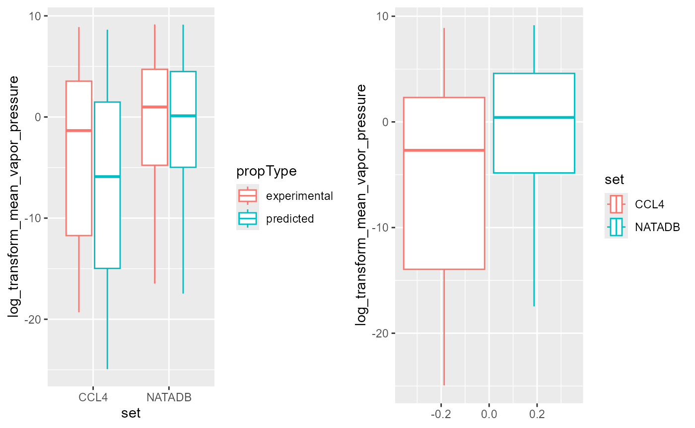
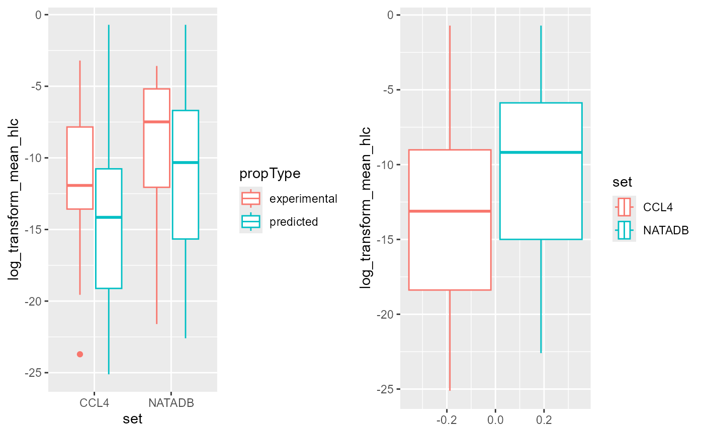
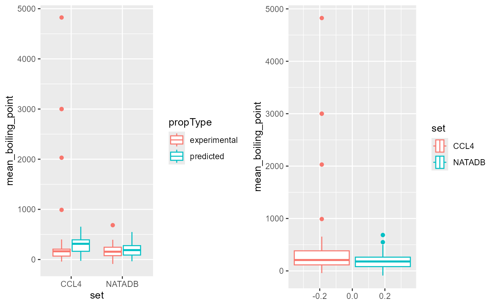

ctxR: Chemical API
US EPA’s Center for Computational Toxicology and Exposure ccte@epa.gov
Source:vignettes/Chemical.Rmd
Chemical.RmdIntroduction

In this vignette, CTX Chemical API will be explored.
The foundation of toxicology, toxicokinetics, and exposure is embedded in the physics and chemistry of chemical-biological interactions. The accurate characterization of chemical structure linked to commonly used identifiers, such as names and Chemical Abstracts Service Registry Numbers (CASRNs), is essential to support both predictive modeling of the data as well as dissemination and application of the data for chemical safety decisions.
With cheminformatics as the backbone for research efforts, sources of available data through the CTX Chemical API include:
- Chemical structures, nomenclature, synonyms, IDs, list associations, physicochemical property, environmental fate and transport data from the Distributed Structure-Searchable Toxicity (DSSTox) database. DSSTox substance identifiers (DTXSIDs) support linking chemical information to a specific chemical across a variety of EPA chemical resources. For early references, see (Richard, A. et al. 2002), (Richard, A. et al. 2006), and (Richard, A. et al 2008).
- Predictions from Toxicity Estimation Software Tool (TEST) suite of QSAR models. For early references, see (Martin, T. et al. 2001), (Martin, T. et al. 2007), and (Young, D. et al. 2008).
More information on Chemicals and Chemistry Data can be found here: https://www.epa.gov/comptox-tools/downloadable-computational-toxicology-data#SCD.
NOTE: Please see the introductory vignette for an overview of the ctxR package and initial set up instruction with API key storage.
Several ctxR functions can be used to access the CTX Chemical API data, as described in the following sections.Tables output in each example have been filtered to only display the first few rows of data.
Chemical Details Resource
Get chemical data
get_chemical_details() retrieves chemical detail data
either using the chemical identifier DTXSID or DTXCID. Alternate
parameter “projection” determines the type of data returned. Examples
for each are provided below:
By DTXSID
chemical_details_by_dtxsid <- get_chemical_details(DTXSID = 'DTXSID7020182')By DTXCID
chemical_details_by_dtxcid <- get_chemical_details(DTXCID = 'DTXCID30182')By Batch Search
vector_dtxsid<- c("DTXSID7020182", "DTXSID9020112", "DTXSID8021430")
chemical_details_by_batch_dtxsid <- get_chemical_details_batch(DTXSID = vector_dtxsid)
vector_dtxcid <- c("DTXCID30182", "DTXCID801430", "DTXCID90112")
chemical_details_by_batch_dtxcid <- get_chemical_details_batch(DTXCID = vector_dtxcid)Pubchem Link to GHS classification
GHS classification
check_existence_by_dtxsid() checks if the supplied
DTXSID is valid and returns a URL for additional information on the
chemical in the case of a valid DTXSID.
By DTXSID
dtxsid_check_true <- check_existence_by_dtxsid(DTXSID = 'DTXSID7020182')
dtxsid_check_false <- check_existence_by_dtxsid(DTXSID = 'DTXSID7020182f')By Batch Search
vector_dtxsid_and_non_dtxsid <- c('DTXSID7020182F', 'DTXSID7020182', 'DTXSID0020232F')
dtxsid_checks <- check_existence_by_dtxsid_batch(DTXSID = vector_dtxsid_and_non_dtxsid)Chemical Property Resource
get_chemical_by_property_range() retrieves data for
chemicals that have a specified property within the input range.
chemical_by_property_range <- get_chemical_by_property_range(start = 1.311,
end = 1.313,
property = 'Density')get_chem_info() retrieves specific chemical information
for an input chemical. This includes both experimental and predicted
values by default, but providing “experimental” or “predicted” to the
type parameter will return the specific associated information.
chemical_info <- get_chem_info(DTXSID = 'DTXSID7020182')Chemical Fate Resource
get_fate_by_dtxsid() retrieves chemical fate data.
fate_by_dtxsid <- get_fate_by_dtxsid(DTXSID = 'DTXSID7020182')Chemical Search Resource
Chemicals can be searched using string values. Examples for each are provided by the following:
By starting value
search_starts_with <- chemical_starts_with(word = 'DTXSID70201')By exact value
search_exact <- chemical_equal(word = 'DTXSID7020182')By substring value
search_contains <- chemical_contains(word = 'DTXSID702018')Subset for MS-Ready Structures
MS-Ready (McEachran, A. et al. 2018) data can be retrieved using a variety of input information. Examples for each are provided below:
By Mass Range
msready_by_mass <- get_msready_by_mass(start = 200.9,
end = 200.95)By Chemical Formula
msready_by_formula <- get_msready_by_formula(formula = 'C16H24N2O5S')By DTXCID
msready_by_dtxcid <- get_msready_by_dtxcid(DTXCID = 'DTXCID30182')List Resource
There are several lists of chemicals one can access using the (CCD list search). These can be filtered by the type, name, inclusion of a specific chemical, or name of list.
All lists by type
chemical_lists_by_type <- get_chemical_lists_by_type(type = 'federal')List by name
public_chemical_list_by_name <- get_public_chemical_list_by_name(listname = 'CCL4')Lists containing a specific chemical
get_lists_containing_chemical() retrieves a list of
names of chemical lists, each of which contains the specified
chemical.
lists_containing_chemical <- get_lists_containing_chemical(DTXSID = 'DTXSID7020182')DTXSIDs for chemical list and starting value
get_chemicals_in_list_start() retrieves a list of
DTXSIDs for a given starting character string in a specified list of
chemicals.
chemicals_in_ccl4_start <- get_chemicals_in_list_start(list_name = 'CCL4', word = 'Bi')DTXSIDs for chemical list and exact value
get_chemicals_in_list_exact() retrieves a list of
DTXSIDs matching exactly a given character string in a specified list of
chemicals.
chemicals_in_ccl4_exact <- get_chemicals_in_list_exact(list_name = 'BIOSOLIDS2021', word = 'Bisphenol A')DTXSIDs for chemical list and containing value
get_chemicals_in_list_contain() retrieves a list of
DTXSIDs that contain a given character string in a specified list of
chemicals.
chemicals_in_ccl4_contain <- get_chemicals_in_list_contain(list_name = 'CCL4', word = 'Bis')Chemicals in a specific list
get_chemicals_in_list() retrieves the specific chemical
information for each chemical contained in the specified list.
chemicals_in_list <- get_chemicals_in_list(list_name = 'CCL4')Chemical File Resource
There are mrv, mol, and image files that can be accessed using either the DTXSID or DTXCID. Examples are provided below:
Get mrv by DTXSID or DTXCID
get_chemical_mrv() retrieves mrv file information for a
chemical specified either by DTXSID or DTXCID.
chemical_mrv_by_dtxsid <- get_chemical_mrv(DTXSID = 'DTXSID7020182')
chemical_mrv_by_dtxcid <- get_chemical_mrv(DTXCID = 'DTXCID30182')Get mol by DTXSID or DTXCID
get_chemical_mol() retrieves mol file information for a
chemical specified either by DTXSID or DTXCID.
chemical_mol_by_dtxsid <- get_chemical_mol(DTXSID = 'DTXSID7020182')
chemical_mol_by_dtxcid <- get_chemical_mol(DTXCID = 'DTXCID30182')Get structure image by DTXSID, DTXCID, or SMILES
get_chemical_image() retrieves image file information
for a chemical specified either by DTXSID or DTXCID. To visualize the
returned array of image information, the user may use either the
png::writePNG() or
countcolors::plotArrayAsImage() functions, among many
choices.
chemical_image_by_dtxsid <- get_chemical_image(DTXSID = 'DTXSID7020182')
chemical_image_by_dtxcid <- get_chemical_image(DTXCID = 'DTXCID30182')
chemical_image_by_smiles <- get_chemical_image(SMILES = 'CC(C)(C1=CC=C(O)C=C1)C1=CC=C(O)C=C1')
countcolors::plotArrayAsImage(chemical_image_by_dtxsid)
countcolors::plotArrayAsImage(chemical_image_by_dtxcid)
countcolors::plotArrayAsImage(chemical_image_by_smiles)Chemical Synonym Resource
get_chemical_synonym() retrieves synonyms for the
specified chemical.
chemical_synonym <- get_chemical_synonym(DTXSID = 'DTXSID7020182')Example Use Case: Comparing Physico-chemical Properties Across Chemical Lists
The fourth Drinking Water Contaminant Candidate List (CCL4) is a set of chemicals that “…are not subject to any proposed or promulgated national primary drinking water regulations, but are known or anticipated to occur in public water systems….” Moreover, this list “…was announced on November 17, 2016. The CCL 4 includes 97 chemicals or chemical groups and 12 microbial contaminants….” The National-Scale Air Toxics Assessments (NATA) is “… EPA’s ongoing comprehensive evaluation of air toxics in the United States… a state-of-the-science screening tool for State/Local/Tribal agencies to prioritize pollutants, emission sources and locations of interest for further study in order to gain a better understanding of risks… use general information about sources to develop estimates of risks which are more likely to overestimate impacts than underestimate them….”
These lists can be found in the CCD at CCL4 with additional information at CCL4 information and NATADB with additional information at NATA information. The quotes from the previous paragraph were excerpted from list detail descriptions found using the CCD links.
In this example use case, physico-chemical Properties data will be
compared between a water contaminant priority and an air toxics list.
Note, the following code chunks use the data.table object,
which is an extension of the data.frame object and has
slightly different syntax. For more information, please refer to data.table
Obtain Lists of Chemicals
First, confirm the chemical list to query.
options(width = 100)
ccl4_information <- get_public_chemical_list_by_name('CCL4')
print(ccl4_information, trunc.cols = TRUE)
#> id type label visibility
#> 1 443 federal WATER|EPA: Chemical Contaminants - CCL 4 PUBLIC
#> longDescription
#> 1 The Contaminant Candidate List (CCL) is a list of contaminants that, at the time of publication, are not subject to any proposed or promulgated national primary drinking water regulations, but are known or anticipated to occur in public water systems. Contaminants listed on the CCL may require future regulation under the Safe Drinking Water Act (SDWA). EPA announced the <a href='https://www.epa.gov/ccl/contaminant-candidate-list-4-ccl-4-0' target='_blank'>fourth Drinking Water Contaminant Candidate List (CCL 4)</a> on November 17, 2016. The CCL 4 includes 97 chemicals or chemical groups and 12 microbial contaminants. The group of cyanotoxins on CCL 4 includes, but is not limited to: anatoxin-a, cylindrospermopsin, microcystins, and saxitoxin. The CCL Chemical Candidate Lists are versioned iteratively and this description navigates between the various versions of the lists. The list of substances displayed below represents only the chemical CCL 4 contaminants. For the versioned lists, please use the hyperlinked lists below.<br/><br/> \r\n\r\n<a href='https://comptox.epa.gov/dashboard/chemical_lists/CCL5' target='_blank'>CCL5 - November 2022</a> <br/><br/>\r\n<a href='https://comptox.epa.gov/dashboard/chemical_lists/CCL4' target='_blank'>CCL4 - November 2016</a> \r\n This list<br/><br/>\r\n<a href='https://comptox.epa.gov/dashboard/chemical_lists/CCL3' target='_blank'>CCL3 - October 2009</a> <br/><br/>\r\n<a href='https://comptox.epa.gov/dashboard/chemical_lists/CCL2' target='_blank'>CCL2 - February 2005</a><br/><br/>\r\n<a href='https://comptox.epa.gov/dashboard/chemical_lists/CCL1' target='_blank'>CCL1 - March 1998</a><br/><br/>
#> updatedAt listName chemicalCount createdAt
#> 1 2022-10-26T21:14:27Z CCL4 100 2017-12-28T17:58:36Z
#> shortDescription
#> 1 The Contaminant Candidate List (CCL) is a list of contaminants that are known or anticipated to occur in public water systems. Version 4 is known as CCL 4.
natadb_information <- get_public_chemical_list_by_name('NATADB')
print(natadb_information, trunc.cols = TRUE)
#> id type label visibility
#> 1 454 federal EPA: National-Scale Air Toxics Assessment (NATA) PUBLIC
#> longDescription
#> 1 The National-Scale Air Toxics Assessment (NATA) is EPA's ongoing comprehensive evaluation of air toxics in the United States. EPA developed the NATA as a state-of-the-science screening tool for State/Local/Tribal Agencies to prioritize pollutants, emission sources and locations of interest for further study in order to gain a better understanding of risks. NATA assessments do not incorporate refined information about emission sources but, rather, use general information about sources to develop estimates of risks which are more likely to overestimate impacts than underestimate them.\r\n\r\nNATA provides estimates of the risk of cancer and other serious health effects from breathing (inhaling) air toxics in order to inform both national and more localized efforts to identify and prioritize air toxics, emission source types and locations which are of greatest potential concern in terms of contributing to population risk. This in turn helps air pollution experts focus limited analytical resources on areas and or populations where the potential for health risks are highest. Assessments include estimates of cancer and non-cancer health effects based on chronic exposure from outdoor sources, including assessments of non-cancer health effects for Diesel Particulate Matter (PM). Assessments provide a snapshot of the outdoor air quality and the risks to human health that would result if air toxic emissions levels remained unchanged.
#> updatedAt listName chemicalCount createdAt
#> 1 2018-11-16T21:42:01Z NATADB 163 2018-02-21T12:04:16Z
#> shortDescription
#> 1 The National-Scale Air Toxics Assessment (NATA) is EPA's ongoing comprehensive evaluation of air toxics in the United States.Next, retrieve the list of chemicals associated with each list.
ccl4 <- get_chemicals_in_list('ccl4')
ccl4 <- data.table::as.data.table(ccl4)
natadb <- get_chemicals_in_list('NATADB')
natadb <- data.table::as.data.table(natadb)We examine the dimensions of the data, the column names, and display a single row for illustrative purposes.
Batch Search Physico-chemical Property Data by DTXSID for Chemical Lists
Next, physico-chemical properties for all chemicals in each list can
be retrieved. The function get_chem_info() will be used to
batch search for a list of DTXSIDs.
ccl4_phys_chem <- get_chem_info_batch(ccl4$dtxsid)
#> Warning in get_chem_info_batch(ccl4$dtxsid): Setting type to ''!
natadb_phys_chem <- get_chem_info_batch(natadb$dtxsid)
#> Warning in get_chem_info_batch(natadb$dtxsid): Setting type to ''!Observe that this returns a single data.table for each query, and the
data.table contains the physico-chemical properties available from the
CompTox Chemicals Dashboard for each chemical in the query. Note, a
warning message was triggered,
Warning: Setting type to ''!, which indicates the the
parameter type was not given a value. A default value is
set within the function and more information can be found in the
associated documentation. We examine the set of physico-chemical
properties for the first chemical in CCL4.
Before any deeper analysis, consider the dimensions of the data and the column names.
Next, we display the unique values for the columns
propertyID and propType.
ccl4_phys_chem[, unique(propertyId)]
#> [1] "boiling-point" "logkow-octanol-water" "melting-point" "vapor-pressure"
#> [5] "water-solubility" "density" "flash-point" "henrys-law"
#> [9] "index-of-refraction" "logkoa-octanol-air" "molar-refractivity" "molar-volume"
#> [13] "polarizability" "surface-tension" "thermal-conductivity" "viscosity"
#> [17] "pka-acidic-apparent" "pka-basic-apparent"
ccl4_phys_chem[, unique(propType)]
#> [1] "experimental" "predicted"Let’s explore this further by examining the mean of the “boiling-point” and “melting-point” data.
ccl4_phys_chem[propertyId == 'boiling-point', .(Mean = mean(value))]
#> Mean
#> <num>
#> 1: 252.6593
ccl4_phys_chem[propertyId == 'boiling-point', .(Mean = mean(value)),
by = .(propType)]
#> propType Mean
#> <char> <num>
#> 1: experimental 250.5943
#> 2: predicted 253.8196
ccl4_phys_chem[propertyId == 'melting-point', .(Mean = mean(value))]
#> Mean
#> <num>
#> 1: 34.91613
ccl4_phys_chem[propertyId == 'melting-point', .(Mean = mean(value)),
by = .(propType)]
#> propType Mean
#> <char> <num>
#> 1: experimental 23.18876
#> 2: predicted 49.99417These results tell us about some of the reported physico-chemical properties of the data sets.
The mean “boiling-point” is 252.6593 degrees Celsius for CCL4, with mean values of 250.5943 and 253.8196 for experimental and predicted, respectively. The mean “melting-point” is 34.91613 degrees Celsius for CCL4, with mean values of 23.18876 and 49.99417 for experimental and predicted, respectively.
To explore all the values of the physico-chemical
properties and calculate their means, we can do the following procedure.
First we look at all the physico-chemical properties individually, then
group them by each property (“boiling-point”, “melting-point”, etc…),
and then additionally group those by property type (“experimental” vs
“predicted”). In the grouping, we look at the columns
value, unit, propertyID and
propType. We also demonstrate how take the mean of the
values for each grouping, using the chemical identifier ‘DTXSID1037567’
for this example, the 25th chemical in CCL4.
head(ccl4_phys_chem[dtxsid == ccl4$dtxsid[[25]], ])
#> name value id source
#> <char> <num> <int> <char>
#> 1: Boiling Point 4.85890e+02 58771702 EPISUITE
#> 2: Boiling Point 3.14450e+02 56038082 OPERA
#> 3: Boiling Point 4.04135e+02 55985095 TEST
#> 4: Density 1.24300e+00 48458607 ACD/Labs
#> 5: Density 1.32900e+00 55296157 TEST
#> 6: Henry's Law 4.33964e-10 45640026 OPERA
#> description
#> <char>
#> 1: <a href='https://www.epa.gov/tsca-screening-tools/epi-suitetm-estimation-program-interface' target='_blank'>EPISUITE Estimation Programs Interface Suite™</a> is a Windows®-based suite of physical/chemical property and environmental fate estimation programs developed by EPA’s and Syracuse Research Corp.
#> 2: OPERA is a free and open source/open data suite of QSAR Models providing predictions and additional information including applicability domain and accuracy assessment, as described in the publication <a href='http://dx.doi.org/10.1186/s13321-018-0263-1'target='_blank'>OPERA models for predicting physicochemical properties and environmental fate endpoints</a>. All models were built on curated data and standardized chemical structures as described in the publication <a href='http://dx.doi.org/10.1080/1062936X.2016.1253611'target='_blank'>An automated curation procedure for addressing chemical errors and inconsistencies in public datasets used in QSAR modelling</a>. All OPERA properties are predicted under ambient conditions of 760mm of Hg at 25 degrees Celsius.
#> 3: The <a href='https://www.epa.gov/chemical-research/toxicity-estimation-software-tool-test' target='_blank'>Toxicity Estimation Software Tool (TEST)</a> is an EPA software application developed to allow users to easily estimate the toxicity of chemicals using Quantitative Structure Activity Relationships (QSARs) methodologies.
#> 4: ACD/Labs physicochemical properties are predicted by the <a href='http://www.acdlabs.com/products/percepta/' target='_blank'>ACD/Labs Percepta Platform</a>.
#> 5: The <a href='https://www.epa.gov/chemical-research/toxicity-estimation-software-tool-test' target='_blank'>Toxicity Estimation Software Tool (TEST)</a> is an EPA software application developed to allow users to easily estimate the toxicity of chemicals using Quantitative Structure Activity Relationships (QSARs) methodologies.
#> 6: OPERA is a free and open source/open data suite of QSAR Models providing predictions and additional information including applicability domain and accuracy assessment, as described in the publication <a href='http://dx.doi.org/10.1186/s13321-018-0263-1'target='_blank'>OPERA models for predicting physicochemical properties and environmental fate endpoints</a>. All models were built on curated data and standardized chemical structures as described in the publication <a href='http://dx.doi.org/10.1080/1062936X.2016.1253611'target='_blank'>An automated curation procedure for addressing chemical errors and inconsistencies in public datasets used in QSAR modelling</a>. All OPERA properties are predicted under ambient conditions of 760mm of Hg at 25 degrees Celsius.
#> propType unit propertyId dtxsid dtxcid
#> <char> <char> <char> <char> <char>
#> 1: predicted °C boiling-point DTXSID1037567 DTXCID9017567
#> 2: predicted °C boiling-point DTXSID1037567 DTXCID9017567
#> 3: predicted °C boiling-point DTXSID1037567 DTXCID9017567
#> 4: predicted g/cm^3 density DTXSID1037567 DTXCID9017567
#> 5: predicted g/cm^3 density DTXSID1037567 DTXCID9017567
#> 6: predicted atm-m3/mole henrys-law DTXSID1037567 DTXCID9017567
ccl4_phys_chem[dtxsid == ccl4$dtxsid[[25]], .(propType, value, unit),
by = .(propertyId)]
#> propertyId propType value unit
#> <char> <char> <num> <char>
#> 1: boiling-point predicted 4.85890e+02 °C
#> 2: boiling-point predicted 3.14450e+02 °C
#> 3: boiling-point predicted 4.04135e+02 °C
#> 4: density predicted 1.24300e+00 g/cm^3
#> 5: density predicted 1.32900e+00 g/cm^3
#> 6: henrys-law predicted 4.33964e-10 atm-m3/mole
#> 7: index-of-refraction predicted 1.55100e+00 <NA>
#> 8: logkoa-octanol-air predicted 1.06255e+01 <NA>
#> 9: logkow-octanol-water predicted 7.08000e-01 <NA>
#> 10: logkow-octanol-water predicted 1.68000e-01 <NA>
#> 11: logkow-octanol-water predicted 1.86625e+00 <NA>
#> 12: logkow-octanol-water predicted 1.69000e+00 <NA>
#> 13: melting-point predicted 2.06010e+02 °C
#> 14: melting-point predicted 1.55804e+02 °C
#> 15: melting-point predicted 1.89090e+02 °C
#> 16: molar-refractivity predicted 8.44810e+01 cm^3
#> 17: molar-volume predicted 2.64941e+02 cm^3
#> 18: polarizability predicted 3.34910e+01 Å^3
#> 19: surface-tension predicted 5.00550e+01 dyn/cm
#> 20: vapor-pressure predicted 4.63364e-08 mmHg
#> 21: water-solubility predicted 7.98701e-07 mol/L
#> 22: water-solubility predicted 1.90108e-03 mol/L
#> 23: water-solubility predicted 6.81847e-03 mol/L
#> 24: water-solubility predicted 2.08200e+00 mol/L
#> propertyId propType value unit
ccl4_phys_chem[dtxsid == ccl4$dtxsid[[25]], .(value, unit),
by = .(propertyId, propType)]
#> propertyId propType value unit
#> <char> <char> <num> <char>
#> 1: boiling-point predicted 4.85890e+02 °C
#> 2: boiling-point predicted 3.14450e+02 °C
#> 3: boiling-point predicted 4.04135e+02 °C
#> 4: density predicted 1.24300e+00 g/cm^3
#> 5: density predicted 1.32900e+00 g/cm^3
#> 6: henrys-law predicted 4.33964e-10 atm-m3/mole
#> 7: index-of-refraction predicted 1.55100e+00 <NA>
#> 8: logkoa-octanol-air predicted 1.06255e+01 <NA>
#> 9: logkow-octanol-water predicted 7.08000e-01 <NA>
#> 10: logkow-octanol-water predicted 1.68000e-01 <NA>
#> 11: logkow-octanol-water predicted 1.86625e+00 <NA>
#> 12: logkow-octanol-water predicted 1.69000e+00 <NA>
#> 13: melting-point predicted 2.06010e+02 °C
#> 14: melting-point predicted 1.55804e+02 °C
#> 15: melting-point predicted 1.89090e+02 °C
#> 16: molar-refractivity predicted 8.44810e+01 cm^3
#> 17: molar-volume predicted 2.64941e+02 cm^3
#> 18: polarizability predicted 3.34910e+01 Å^3
#> 19: surface-tension predicted 5.00550e+01 dyn/cm
#> 20: vapor-pressure predicted 4.63364e-08 mmHg
#> 21: water-solubility predicted 7.98701e-07 mol/L
#> 22: water-solubility predicted 1.90108e-03 mol/L
#> 23: water-solubility predicted 6.81847e-03 mol/L
#> 24: water-solubility predicted 2.08200e+00 mol/L
#> propertyId propType value unit
ccl4_phys_chem[dtxsid == ccl4$dtxsid[[25]], .(Mean_value = sapply(.SD, mean)),
by = .(propertyId, unit), .SDcols = c("value")]
#> propertyId unit Mean_value
#> <char> <char> <num>
#> 1: boiling-point °C 4.014917e+02
#> 2: density g/cm^3 1.286000e+00
#> 3: henrys-law atm-m3/mole 4.339640e-10
#> 4: index-of-refraction <NA> 1.551000e+00
#> 5: logkoa-octanol-air <NA> 1.062550e+01
#> 6: logkow-octanol-water <NA> 1.108062e+00
#> 7: melting-point °C 1.836347e+02
#> 8: molar-refractivity cm^3 8.448100e+01
#> 9: molar-volume cm^3 2.649410e+02
#> 10: polarizability Å^3 3.349100e+01
#> 11: surface-tension dyn/cm 5.005500e+01
#> 12: vapor-pressure mmHg 4.633640e-08
#> 13: water-solubility mol/L 5.226801e-01
ccl4_phys_chem[dtxsid == ccl4$dtxsid[[25]], .(Mean_value = sapply(.SD, mean)),
by = .(propertyId, unit, propType),
.SDcols = c("value")][order(propertyId)]
#> propertyId unit propType Mean_value
#> <char> <char> <char> <num>
#> 1: boiling-point °C predicted 4.014917e+02
#> 2: density g/cm^3 predicted 1.286000e+00
#> 3: henrys-law atm-m3/mole predicted 4.339640e-10
#> 4: index-of-refraction <NA> predicted 1.551000e+00
#> 5: logkoa-octanol-air <NA> predicted 1.062550e+01
#> 6: logkow-octanol-water <NA> predicted 1.108062e+00
#> 7: melting-point °C predicted 1.836347e+02
#> 8: molar-refractivity cm^3 predicted 8.448100e+01
#> 9: molar-volume cm^3 predicted 2.649410e+02
#> 10: polarizability Å^3 predicted 3.349100e+01
#> 11: surface-tension dyn/cm predicted 5.005500e+01
#> 12: vapor-pressure mmHg predicted 4.633640e-08
#> 13: water-solubility mol/L predicted 5.226801e-01Review Physico-Chemical Properties Across Chemical Lists
We consider exploring the differences in mean predicted and
experimental values for a variety of physico-chemical properties in an
effort to understand better the CCL4 and NATADB lists. In particular, we
examine “vapor-pressure”, “henrys-law”, and “boiling-point” and plot the
means by chemical for these using boxplots. We then compare the values
by grouping by both data set and propType value.
Vapor Pressure
Begin by grouping pulled data by DTXSID, and also by DTXSID and property type.
ccl4_vapor_all <- ccl4_phys_chem[propertyId %in% 'vapor-pressure',
.(mean_vapor_pressure = sapply(.SD, mean)),
.SDcols = c('value'), by = .(dtxsid)]
natadb_vapor_all <- natadb_phys_chem[propertyId %in% 'vapor-pressure',
.(mean_vapor_pressure = sapply(.SD, mean)),
.SDcols = c('value'), by = .(dtxsid)]
ccl4_vapor_grouped <- ccl4_phys_chem[propertyId %in% 'vapor-pressure',
.(mean_vapor_pressure = sapply(.SD, mean)),
.SDcols = c('value'),
by = .(dtxsid, propType)]
natadb_vapor_grouped <- natadb_phys_chem[propertyId %in% 'vapor-pressure',
.(mean_vapor_pressure =
sapply(.SD, mean)),
.SDcols = c('value'),
by = .(dtxsid, propType)]Examine summary statistics.
summary(ccl4_vapor_all)
#> dtxsid mean_vapor_pressure
#> Length:83 Min. : 0.000
#> Class :character 1st Qu.: 0.000
#> Mode :character Median : 0.002
#> Mean : 224.118
#> 3rd Qu.: 3.866
#> Max. :6007.242
summary(ccl4_vapor_grouped)
#> dtxsid propType mean_vapor_pressure
#> Length:140 Length:140 Min. : 0.000
#> Class :character Class :character 1st Qu.: 0.000
#> Mode :character Mode :character Median : 0.069
#> Mean : 265.007
#> 3rd Qu.: 10.125
#> Max. :7252.700
summary(natadb_vapor_all)
#> dtxsid mean_vapor_pressure
#> Length:145 Min. : 0.000
#> Class :character 1st Qu.: 0.007
#> Mode :character Median : 1.001
#> Mean : 225.872
#> 3rd Qu.: 89.931
#> Max. :9298.713
summary(natadb_vapor_grouped)
#> dtxsid propType mean_vapor_pressure
#> Length:267 Length:267 Min. : 0.000
#> Class :character Class :character 1st Qu.: 0.008
#> Mode :character Mode :character Median : 1.521
#> Mean : 243.404
#> 3rd Qu.: 98.721
#> Max. :9412.390With such a large range of values covering several orders of magnitude, log transform the data. This data from both chemical lists can also be plotted individually and by property type.
ccl4_vapor_all[, log_transform_mean_vapor_pressure := log(mean_vapor_pressure)]
ccl4_vapor_grouped[, log_transform_mean_vapor_pressure :=
log(mean_vapor_pressure)]
natadb_vapor_all[, log_transform_mean_vapor_pressure :=
log(mean_vapor_pressure)]
natadb_vapor_grouped[, log_transform_mean_vapor_pressure :=
log(mean_vapor_pressure)]Finally, compare both chemical lists simultaneously. To accomplish
this, add a column to each data.table denoting to which chemical list
the rows correspond and then combine the rows from both data sets
together using the function rbind().
ccl4_vapor_grouped[, set := 'CCL4']
natadb_vapor_grouped[, set := 'NATADB']
all_vapor_grouped <- rbind(ccl4_vapor_grouped, natadb_vapor_grouped)
vapor_box <- ggplot(all_vapor_grouped,
aes(set, log_transform_mean_vapor_pressure)) +
geom_boxplot(aes(color = propType))
vapor <- ggplot(all_vapor_grouped, aes(log_transform_mean_vapor_pressure)) +
geom_boxplot((aes(color = set))) +
coord_flip()Plot the combined data. Boxplots are colored based on the property type, with mean log transformed vapor pressure plotted for each chemical list and property type, or by chemical list alone.

In the box plots above, a general trend indicates that that the NATADB chemical list has a higher mean vapor pressure than the CCL4 chemical list.
Henry’s Law constant
Henry’s Law constant can be explored in a similar fashion. Begin by grouping data by DTXSID, and also by DTXSID and property type.
ccl4_hlc_all <- ccl4_phys_chem[propertyId %in% 'henrys-law',
.(mean_hlc = sapply(.SD, mean)),
.SDcols = c('value'), by = .(dtxsid)]
natadb_hlc_all <- natadb_phys_chem[propertyId %in% 'henrys-law',
.(mean_hlc = sapply(.SD, mean)),
.SDcols = c('value'), by = .(dtxsid)]
ccl4_hlc_grouped <- ccl4_phys_chem[propertyId %in% 'henrys-law',
.(mean_hlc = sapply(.SD, mean)),
.SDcols = c('value'),
by = .(dtxsid, propType)]
natadb_hlc_grouped <- natadb_phys_chem[propertyId %in% 'henrys-law',
.(mean_hlc = sapply(.SD, mean)),
.SDcols = c('value'),
by = .(dtxsid, propType)]Examine summary statistics.
summary(ccl4_hlc_all)
#> dtxsid mean_hlc
#> Length:82 Min. :0.0000000
#> Class :character 1st Qu.:0.0000000
#> Mode :character Median :0.0000007
#> Mean :0.0076308
#> 3rd Qu.:0.0000216
#> Max. :0.4922550
summary(ccl4_hlc_grouped)
#> dtxsid propType mean_hlc
#> Length:110 Length:110 Min. :0.0000000
#> Class :character Class :character 1st Qu.:0.0000000
#> Mode :character Mode :character Median :0.0000020
#> Mean :0.0063874
#> 3rd Qu.:0.0001217
#> Max. :0.4922550
summary(natadb_hlc_all)
#> dtxsid mean_hlc
#> Length:144 Min. :0.0000000
#> Class :character 1st Qu.:0.0000002
#> Mode :character Median :0.0000328
#> Mean :0.0086311
#> 3rd Qu.:0.0012426
#> Max. :0.4922550
summary(natadb_hlc_grouped)
#> dtxsid propType mean_hlc
#> Length:210 Length:210 Min. :0.0000000
#> Class :character Class :character 1st Qu.:0.0000003
#> Mode :character Mode :character Median :0.0001028
#> Mean :0.0073349
#> 3rd Qu.:0.0028132
#> Max. :0.4922550Again, log transform the data as it is positive and covers several orders of magnitude.
ccl4_hlc_all[, log_transform_mean_hlc := log(mean_hlc)]
ccl4_hlc_grouped[, log_transform_mean_hlc := log(mean_hlc)]
natadb_hlc_all[, log_transform_mean_hlc := log(mean_hlc)]
natadb_hlc_grouped[, log_transform_mean_hlc := log(mean_hlc)]Finally, compare both chemical lists simultaneously. To accomplish
this, add a column to each data.table denoting to which chemical list
the rows correspond and then combine the rows from both data sets
together using the function rbind().
ccl4_hlc_grouped[, set := 'CCL4']
natadb_hlc_grouped[, set := 'NATADB']
all_hlc_grouped <- rbind(ccl4_hlc_grouped, natadb_hlc_grouped)
hlc_box <- ggplot(all_hlc_grouped, aes(set, log_transform_mean_hlc)) +
geom_boxplot(aes(color = propType))
hlc <- ggplot(all_hlc_grouped, aes(log_transform_mean_hlc)) +
geom_boxplot(aes(color = set)) +
coord_flip()
Again, in both grouping by propType and aggregating all
results together by chemical list, NATADB chemicals generally higher
mean Henry’s Law Constant value than CCL4 chemicals.
Boling Point
Boiling Point data be explored. Begin by grouping data by DTXSID, and also by DTXSID and property type.
ccl4_boiling_all <- ccl4_phys_chem[propertyId %in% 'boiling-point',
.(mean_boiling_point = sapply(.SD, mean)),
.SDcols = c('value'), by = .(dtxsid)]
natadb_boiling_all <- natadb_phys_chem[propertyId %in% 'boiling-point',
.(mean_boiling_point =
sapply(.SD, mean)),
.SDcols = c('value'), by = .(dtxsid)]
ccl4_boiling_grouped <- ccl4_phys_chem[propertyId %in% 'boiling-point',
.(mean_boiling_point =
sapply(.SD, mean)),
.SDcols = c('value'),
by = .(dtxsid, propType)]
natadb_boiling_grouped <- natadb_phys_chem[propertyId %in% 'boiling-point',
.(mean_boiling_point =
sapply(.SD, mean)),
.SDcols = c('value'),
by = .(dtxsid, propType)]Calculate summary statistics.
summary(ccl4_boiling_all)
#> dtxsid mean_boiling_point
#> Length:91 Min. : -34.92
#> Class :character 1st Qu.: 167.40
#> Mode :character Median : 306.29
#> Mean : 350.26
#> 3rd Qu.: 390.63
#> Max. :3377.66
summary(ccl4_boiling_grouped)
#> dtxsid propType mean_boiling_point
#> Length:143 Length:143 Min. : -40.78
#> Class :character Class :character 1st Qu.: 115.13
#> Mode :character Mode :character Median : 208.03
#> Mean : 318.70
#> 3rd Qu.: 383.44
#> Max. :4825.00
summary(natadb_boiling_all)
#> dtxsid mean_boiling_point
#> Length:152 Min. :-38.45
#> Class :character 1st Qu.: 85.98
#> Mode :character Median :187.18
#> Mean :186.92
#> 3rd Qu.:275.57
#> Max. :584.48
summary(natadb_boiling_grouped)
#> dtxsid propType mean_boiling_point
#> Length:295 Length:295 Min. :-87.78
#> Class :character Class :character 1st Qu.: 82.20
#> Mode :character Mode :character Median :180.00
#> Mean :181.67
#> 3rd Qu.:262.46
#> Max. :685.00Since some of the boiling point values have negative values, log transformation of these values will result in warnings as NaNs are produced.
Finally, compare both chemical lists simultaneously. To accomplish
this, add a column to each data.table denoting to which chemical list
the rows correspond and then combine the rows from both data sets
together using the function rbind().
ccl4_boiling_grouped[, set := 'CCL4']
natadb_boiling_grouped[, set := 'NATADB']
all_boiling_grouped <- rbind(ccl4_boiling_grouped, natadb_boiling_grouped)
boiling_box <- ggplot(all_boiling_grouped, aes(set, mean_boiling_point)) +
geom_boxplot(aes(color = propType))
boiling <- ggplot(all_boiling_grouped, aes(mean_boiling_point)) +
geom_boxplot(aes(color = set)) +
coord_flip()
A visual inspection of this set of graphs is not as clear as in the previous cases. Note that the predicted values for each data set tend to be higher than the experimental. The mean of CCL4, by predicted and experimental appears to be greater than the corresponding means for NATADB, as does the overall mean, but the interquartile ranges of these different groupings yield slightly different results. This gives us a sense that the picture for boiling point is not as clear cut between experimental and predicted for these two chemical lists as it was in the previous physico-chemical properties investigated.
To summarize the observations, across the various physico-chemical properties for chemicals in these chemical lists, there are indeed differences between the mean values of various physico-chemical properties when grouped by predicted or experimental.
- For “vapor-pressure”, the means of predicted values tend to be a little lower than experimental, though they are much closer in the case of NATADB than CCL4.
- The trend of lower predicted means compared to experimental means is more clearly demonstrated for “henrys-law” values in both data sets.
- In the case of “boiling-point”, the predicted values are greater than the experimental values, though this is much more pronounced in CCL4 while the set of means for NATADB are again fairly close.
Conclusion
In this vignette, a variety of functions that access different types
of data found in the Chemical endpoints of the CTX APIs
were explored. While this exploration was not exhaustive, it provides a
basic introduction to how one may access data and work with it.
Additional endpoints and corresponding functions exist and we encourage
the user to explore these while keeping in mind the examples contained
in this vignette.